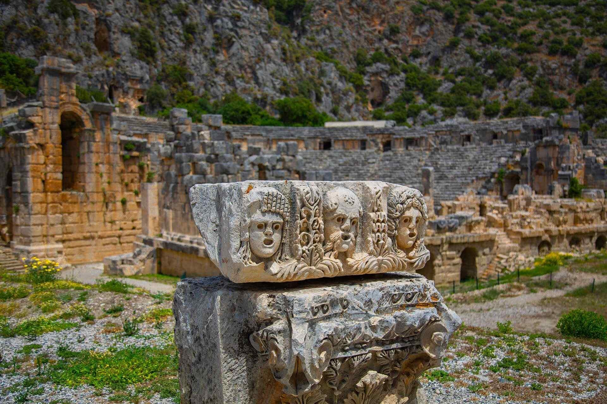

|  |
Bugünkü Demre İlçe merkezinde ve civarında yer alan Myra Antik Kenti, aynı adı taşıyan ova üzerinde kurulmuştur. Myros nehrinin (bugünkü Demre Çayı) batısındaki ulaşıma elverişli kanal ile şehrin denizle bağlantısı sağlanmaktaydı. Kanalın diğer yanında yer alan Andriake (Çayağzı) limanından da bölgenin deniz ulaşımı ve ticareti yürütülmekteydi. Myra Antik Kenti özellikle Likya Dönemi kaya mezarları, Roma Dönemi tiyatrosu ve Bizans Dönemi Aziz Nikolaos Kilisesi (Noel Baba) ile ünlüdür.
Kaya mezarları, Likçe yazıtları ve sikkeler, Myra’nın en azından İ.Ö. 5. Yüzyıldan itibaren varlığını sürdürdüğünü gösterirler. Strabon’un verdiği bilgiye göre Likya Birliğinin altı büyük kentinden biri olan Myra, Likçe yazıtlarda Myrrh adıyla anılır. İ.S. 2. Yüzyıl Myra’nın büyük bir gelişmeye sahne olduğu dönemdir. Likya Birliğinin Metropolisi olan şehirde, Likyalı zengin kişilerin yardımları ile birçok yapı inşa edilmiş ve onarılmıştır. Bizans Döneminde ise Myra, dini yönden olduğu kadar idari yönden de önde gelen şehirlerden biri olmuştur.
Günümüze dek ulaşan ününü, Aziz Nikolaos’un (NoelBaba) İ.S. 4. Yüzyılda şehrin piskoposu olmasına ve ölümünden sonra aziz mertebesine ulaşıp adına kilise yapılmasına borçludur. Myra, 7. Yüzyıldan itibaren gerek deprem, su baskını ve Demre Çayı’nın getirdiği alüvyonlar, gerekse Arap akınları sebebiyle önemini yitirip 12. yüzyılda köy hüviyetine dönüşmüştür. Günümüz kalıntılarını, akropolün güney eteğinde yer alan tiyatro ile her iki yanında yer alan kaya mezarları oluşturur.
Yapılan araştırmalara göre bugün oldukça sağlam durumda olan Roma Dönemi surlarının dışında, Helenistik hatta İ.Ö.5.y.y.’a tarihlenen sur kalıntılarına akropol tepesi ve çevresinde rastlamak i mümkündür. Akropolün güney eteğinde yer alan tiyatro, gerek oturma sıraları gerekse sahne binası ile iyi korunmuş bir Roma Dönemi tiyatrosunun özelliklerini yansıtır. Sahne binası ikinci katın yarısına kadar ayaktadır. Tiyatronun hemen iki yanında, kabartmalı veya düz kaya mezarları yer alır. Likyalıların ahşap ev mimarisinin kaya mezarlarına en iyi uyarlanmış örnekleri olan Myra mezarlarının içinde, ölüyü ve yakınlarını betimleyen kabartmalı mezar, en ilginç örneklerden biridir.
|